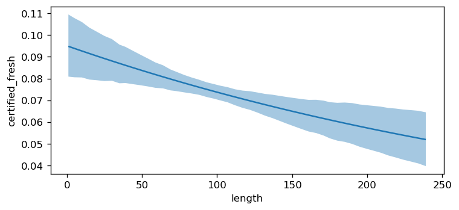
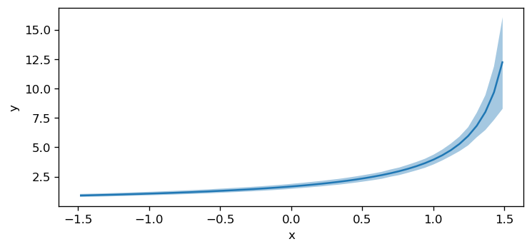
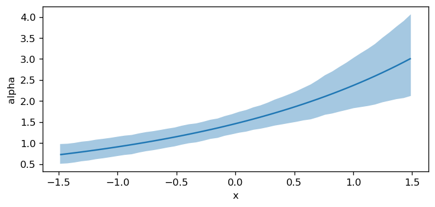

import matplotlib.pyplot as plt
import numpy as np
import pandas as pd
import warnings
import bambi as bmb
warnings.simplefilter(action="ignore", category=FutureWarning)Plot Conditional Adjusted Predictions
This notebook shows how to use, and the capabilities, of the plot_predictions function. The plot_predictions function is a part of Bambi’s sub-package interpret that features a set of tools used to interpret complex regression models that is inspired by the R package marginaleffects.
Interpreting Generalized Linear Models
The purpose of the generalized linear model (GLM) is to unify the approaches needed to analyze data for which either: (1) the assumption of a linear relation between \(x\) and \(y\), or (2) the assumption of normal variation is not appropriate. GLMs are typically specified in three stages: 1. the linear predictor \(\eta = X\beta\) where \(X\) is an \(n\) x \(p\) matrix of explanatory variables. 2. the link function \(g(\cdot)\) that relates the linear predictor to the mean of the outcome variable \(\mu = g^{-1}(\eta) = g^{-1}(X\beta)\) 3. the random component specifying the distribution of the outcome variable \(y\) with mean \(\mathbb{E}(y|X) = \mu\).
Based on these three specifications, the mean of the distribution of \(y\), given \(X\), is determined by \(X\beta: \mathbb{E}(y|X) = g^{-1}(X\beta)\).
GLMs are a broad family of models where the output \(y\) is typically assumed to follow an exponential family distribution, e.g., Binomial, Poisson, Gamma, Exponential, and Normal. The job of the link function is to map the linear space of the model \(X\beta\) onto the non-linear space of a parameter like \(\mu\). Commonly used link function are the logit and log link. Also known as the canonical link functions. This brief introduction to GLMs is not meant to be exhuastive, and another good starting point is the Bambi Basic Building Blocks example.
Due to the link function, there are typically three quantities of interest to interpret in a GLM: 1. the linear predictor \(\eta\) 2. the mean \(\mu = g^{-1}(\eta)\) 3. the response variable \(Y \sim \mathcal{D}(\mu, \theta)\) where \(\mu\) is the mean parameter and \(\theta\) is (possibly) a vector that contains all the other “nuissance” parameters of the distribution.
As modelers, we are usually more interested in interpreting (2) and (3). However, \(\mu\) is not always on the same scale of the response variable and can be more difficult to interpret. Rather, the response scale is a more interpretable scale. Additionally, it is often the case that modelers would like to analyze how a model parameter varies across a range of explanatory variable values. To achieve such an analysis, Bambi has taken inspiration from the R package marginaleffects, and implemented a plot_predictions function that plots the conditional adjusted predictions to aid in the interpretation of GLMs. Below, it is briefly discussed what are conditionally adjusted predictions, how they are computed, and ultimately how to use the plot_predictions function.
Conditionally Adjusted Predictions
Adjusted predictions refers to the outcome predicted by a fitted model on a specified scale for a given combination of values of the predictor variables, such as their observed values, their means, or some user specified grid of values. The specification of the scale to make the predictions, the link or response scale, refers to the scale used to estimate the model. In normal linear regression, the link scale and the response scale are identical, and therefore, the adjusted prediction is expressed as the mean value of the response variable at the given values of the predictor variables. On the other hand, a logistic regression’s link and response scale are not identical. An adjusted prediction on the link scale will be represented as the log-odds of a successful response given values of the predictor variables. Whereas an adjusted prediction on the response scale gives the probability that the response variable equals 1. The conditional part of conditionally adjusted predictions represents the specific predictor(s) and its values we would like to condition on when plotting predictions.
Computing Adjusted Predictions
The objective of plotting conditional adjusted predictions is to visualize how a parameter of the (conditional) response distribution varies as a function of (some) explanatory variables. In predictions, there are three scenarios to compute conditional adjusted predictions:
- user provided values
- a grid of equally spaced and central values
- empirical distribution (original data used to fit the model)
In the case of (1) above, a dictionary is passed with the explanatory variables as keys, and the values to condition on are the values. With this dictionary, Bambi assembles all pairwise combinations (transitions) of the specified explanatory variables into a new “hypothetical” dataset. Covariates not existient in the dictionary are held at their mean or mode.
In (2), a string or list is passed with the name(s) of the explanatory variable(s) to create a grid of equally spaced values. This is done by holding all other explanatory variables constant at some specified value, a reference grid, that may or may not correspond to actual observations in the dataset used to fit the model. By default, the plot_predictions function uses a grid of 200 equally spaced values between the minimum and maximum values of the specified explanatory variable as the reference grid.
Lastly, in (3), the original data used to fit the model is used to compute predictions. This is known as unit level predictions.
Using the data, from scenario 1, 2, or 3, the plot_predictions function uses the fitted model to then compute the predictions. The plot_predictions function then uses these predictions to plot the model parameter as a function of (some) explanatory variable.
Gaussian Linear Model
For the first demonstration, we will use a Gaussian linear regression model with the mtcars dataset to better understand the plot_predictions function and its arguments. The mtcars dataset was extracted from the 1974 Motor Trend US magazine, and comprises fuel consumption and 10 aspects of automobile design and performance for 32 automobiles (1973–74 models). The following is a brief description of the variables in the dataset:
- mpg: Miles/(US) gallon
- cyl: Number of cylinders
- disp: Displacement (cu.in.)
- hp: Gross horsepower
- drat: Rear axle ratio
- wt: Weight (1000 lbs)
- qsec: 1/4 mile time
- vs: Engine (0 = V-shaped, 1 = straight)
- am: Transmission (0 = automatic, 1 = manual)
- gear: Number of forward gear
# Load data
data = bmb.load_data('mtcars')
data["cyl"] = data["cyl"].replace({4: "low", 6: "medium", 8: "high"})
data["gear"] = data["gear"].replace({3: "A", 4: "B", 5: "C"})
data["cyl"] = pd.Categorical(data["cyl"], categories=["low", "medium", "high"], ordered=True)
# Define and fit the Bambi model
model = bmb.Model("mpg ~ 0 + hp * wt + cyl + gear", data)
idata = model.fit(draws=1000, target_accept=0.95, random_seed=1234)Auto-assigning NUTS sampler...
Initializing NUTS using jitter+adapt_diag...
Multiprocess sampling (2 chains in 2 jobs)
NUTS: [sigma, hp, wt, hp:wt, cyl, gear]Sampling 2 chains for 1_000 tune and 1_000 draw iterations (2_000 + 2_000 draws total) took 41 seconds.
We recommend running at least 4 chains for robust computation of convergence diagnostics
The rhat statistic is larger than 1.01 for some parameters. This indicates problems during sampling. See https://arxiv.org/abs/1903.08008 for detailsWe can print the Bambi model object to obtain the model components. Below, we see that the Gaussian linear model uses an identity link function that results in no transformation of the linear predictor to the mean of the outcome variable, and the distrbution of the likelihood is Gaussian.
Default values
Now that we have fitted the model, we can visualize how a model parameter varies as a function of (some) interpolated covariate. For this example, we will visualize how the mean response mpg varies as a function of the covariate hp.
The Bambi model, ArviZ inference data object (containing the posterior samples and the data used to fit the model), and a list or dictionary of covariates, in this example only hp, are passed to the plot_predictions function. The plot_predictions function then computes the conditional adjusted predictions for each covariate in the list or dictionary using the method described above. The plot_predictions function returns a matplotlib figure object that can be further customized.
fig, ax = plt.subplots(figsize=(7, 3), dpi=120)
bmb.interpret.plot_predictions(model, idata, "hp", ax=ax);Default computed for conditional variable: hp
Default computed for unspecified variable: cyl, gear, wtBefore we talk about the plot, you will notice that some messages have been logged to the console. By default interpret is verbose and logs a message to the console if a default value is computed for covariates in conditional. This is useful because unless the documentation is read, it can be difficult to tell which covariates are having default values computed for. Thus, Bambi has a config file bmb.config["INTERPRET_VERBOSE"] where we can specify whether or not to log messages. By default, this is set to true. To turn off logging, set bmb.config["INTERPRET_VERBOSE"] = False. From here on, we will turn off logging.
The plot above shows that as hp increases, the mean mpg decreases. As stated above, this insight was obtained by creating the reference grid and then using the fitted model to compute the predicted values of the model parameter, in this example mpg, at each value of the reference grid.
By default, plot_predictions uses the highest density interval (HDI) of the posterior distribution to compute the credible interval of the conditional adjusted predictions. The HDI is a Bayesian analog to the frequentist confidence interval. The HDI is the shortest interval that contains a specified probability of the posterior distribution. By default, plot_predictions uses the 94% HDI.
plot_predictions uses the posterior distribution by default to visualize some mean outcome parameter . However, the posterior predictive distribution can also be plotted by specifying pps=True where pps stands for posterior predictive samples of the response variable.
bmb.config["INTERPRET_VERBOSE"] = Falsefig, ax = plt.subplots(figsize=(7, 3), dpi=120)
bmb.interpret.plot_predictions(model, idata, "hp", pps=True, ax=ax);Here, we notice that the uncertainty in the conditional adjusted predictions is much larger than the uncertainty when pps=False. This is because the posterior predictive distribution accounts for the uncertainty in the model parameters and the uncertainty in the data. Whereas, the posterior distribution only accounts for the uncertainty in the model parameters.
Additionally, predictions can be called to obtain a summary dataframe of the data, mean predictions (estimate), and uncertainty interval. The covariate columns in this dataframe is used to create the plot.
summary_df = bmb.interpret.predictions(model, idata, "hp", pps=True)
summary_df.head(10)| hp | cyl | gear | wt | estimate | lower_3.0% | upper_97.0% | |
|---|---|---|---|---|---|---|---|
| 0 | 52 | high | A | 3.21725 | 21.920836 | 15.675414 | 28.096253 |
| 1 | 57 | high | A | 3.21725 | 21.864299 | 16.083605 | 28.164090 |
| 2 | 63 | high | A | 3.21725 | 21.556234 | 15.924024 | 27.673221 |
| 3 | 69 | high | A | 3.21725 | 21.255795 | 15.181309 | 27.002164 |
| 4 | 75 | high | A | 3.21725 | 21.091406 | 14.821219 | 26.502849 |
| 5 | 80 | high | A | 3.21725 | 20.955432 | 15.520032 | 26.290511 |
| 6 | 86 | high | A | 3.21725 | 20.667079 | 15.119132 | 26.286052 |
| 7 | 92 | high | A | 3.21725 | 20.459366 | 14.927590 | 25.803844 |
| 8 | 98 | high | A | 3.21725 | 20.282865 | 14.978005 | 25.363441 |
| 9 | 103 | high | A | 3.21725 | 20.032851 | 14.842361 | 25.499042 |
plot_predictions allows up to three covariates to be plotted simultaneously where the first element in the list represents the main (x-axis) covariate, the second element the group (hue / color), and the third element the facet (panel). However, when plotting more than one covariate, it can be useful to pass specific group and panel arguments to aid in the interpretation of the plot. Therefore, subplot_kwargs allows the user to manipulate the plotting by passing a dictionary where the keys are {"main": ..., "group": ..., "panel": ...} and the values are the names of the covariates to be plotted. For example, passing two covariates hp and wt and specifying subplot_kwargs={"main": "hp", "group": "wt", "panel": "wt"}.
bmb.interpret.plot_predictions(
model=model,
idata=idata,
conditional={"hp": np.linspace(50, 350, 50), "wt": np.linspace(1, 6, 5)},
legend=False,
subplot_kwargs={"main": "hp", "group": "wt", "panel": "wt"},
fig_kwargs={"figsize": (20, 8), "sharey": True}
)
plt.tight_layout();
Furthermore, categorical covariates can also be plotted. We plot the the mean mpg as a function of the two categorical covariates gear and cyl below. The plot_predictions function automatically plots the conditional adjusted predictions for each level of the categorical covariate. Furthermore, when passing a list of covariates into the plot_predictions function, the list will be converted into a dictionary object where the key is taken from (“horizontal”, “color”, “panel”) and the values are the names of the variables. By default, the first element of the list is specified as the “horizontal” covariate, the second element of the list is specified as the “color” covariate, and the third element of the list is mapped to different plot panels.
fig, ax = plt.subplots(figsize=(7, 3), dpi=120)
bmb.interpret.plot_predictions(model, idata, ["gear", "cyl"], ax=ax);
User provided values
In the previous example, default values were computed to construct a reference grid to compute the conditional adjusted predictions. We can also pass our own values for the covariates into conditional using a dictionary where the key-value pairs are the covariate and value(s) of interest. For example, if we wanted to compute the predictions for hp=100, wt=[1.5, 3.5], and cyl=["low", "medium", "high"] we would pass the following dictionary in the code block below. As can be seen, several data types can be passed such as: np.ndarray, list, int, float, and str.
Furthermore, Bambi by default, maps the order of the dict keys to the main, group, and panel of the matplotlib figure. Below, since hp is the first key, this is used for the x-axis, wt for the group (color), and cyl for the panel (facet).
bmb.interpret.plot_predictions(
model,
idata,
conditional={
"hp": [100, 120],
"wt": np.array([1.5, 3.5]),
"cyl": ["low", "medium", "high"]
},
fig_kwargs={"figsize": (10, 4), "sharey": True}
);Before the plot is described, lets see how the dictionary passed to conditional was used to create the dataset in order to compute predictions.
summary_df = bmb.interpret.predictions(
model,
idata,
conditional={
"hp": [100, 120],
"wt": np.array([1.5, 3.5]),
"cyl": ["low", "medium", "high"]
},
)
summary_df| hp | wt | cyl | gear | estimate | lower_3.0% | upper_97.0% | |
|---|---|---|---|---|---|---|---|
| 0 | 100 | 1.5 | high | A | 26.517721 | 22.231329 | 31.409020 |
| 1 | 100 | 1.5 | low | A | 27.154631 | 23.710370 | 30.854390 |
| 2 | 100 | 1.5 | medium | A | 25.388964 | 20.858360 | 29.439134 |
| 3 | 100 | 3.5 | high | A | 19.125688 | 16.198962 | 22.480499 |
| 4 | 100 | 3.5 | low | A | 19.762599 | 16.651143 | 23.520939 |
| 5 | 100 | 3.5 | medium | A | 17.996931 | 15.646609 | 20.272951 |
| 6 | 120 | 1.5 | high | A | 25.242986 | 21.389207 | 29.835175 |
| 7 | 120 | 1.5 | low | A | 25.879897 | 21.993742 | 29.826717 |
| 8 | 120 | 1.5 | medium | A | 24.114229 | 19.499411 | 27.954867 |
| 9 | 120 | 3.5 | high | A | 18.499053 | 15.805280 | 21.040859 |
| 10 | 120 | 3.5 | low | A | 19.135964 | 15.476760 | 22.781403 |
| 11 | 120 | 3.5 | medium | A | 17.370296 | 14.906599 | 19.609224 |
When a dictionary is passed, that informs Bambi that the user wants to compute predictions on user provided values. Thus, a pairwise grid is constructed using the dictionary values. Otherwise, a dataframe of unequal array lengths cannot be constructed. Furthermore, since gear was not passed as a key, but was a term in the model, the default value of A was computed for it.
Given we now know that a pairwise grid was computed usiong the conditional dict, One interpretation of the plot above is that across all cylinder groups, a larger wt results in a lower mean mpg.
Unit level predictions
In the previous example, user provided values were computed to construct a pairwise grid to compute the conditional adjusted predictions. It is also possible to compute predictions using the observed (empirical) data used to fit the model and then average over a specific or set of covariates to obtain average adjusted predictions. This is known as unit level predictions. To compute unit level predictions, do not pass any values to the conditional arg. and or specify None (the default).
summary_df = bmb.interpret.predictions(
model,
idata,
conditional=None
)
summary_df.head()| cyl | gear | hp | wt | estimate | lower_3.0% | upper_97.0% | |
|---|---|---|---|---|---|---|---|
| 0 | medium | B | 110 | 2.620 | 22.230773 | 20.057140 | 24.322536 |
| 1 | medium | B | 110 | 2.875 | 21.329605 | 19.371961 | 23.354494 |
| 2 | low | B | 93 | 2.320 | 25.914300 | 24.439324 | 27.767257 |
| 3 | medium | A | 110 | 3.215 | 18.690801 | 16.457099 | 21.072167 |
| 4 | high | A | 175 | 3.440 | 16.924656 | 15.260324 | 18.603531 |
# data used to fit the model
model.data[["cyl", "gear", "hp", "wt"]].head()| cyl | gear | hp | wt | |
|---|---|---|---|---|
| 0 | medium | B | 110 | 2.620 |
| 1 | medium | B | 110 | 2.875 |
| 2 | low | B | 93 | 2.320 |
| 3 | medium | A | 110 | 3.215 |
| 4 | high | A | 175 | 3.440 |
Notice how the data in the summary dataframe and model data are the same.
Marginalizing over covariates
Since the empirical distrubution is used for computing predictions, the same number of rows (\(32\)) is returned as the data used to fit the model. To average over a covariate, use the average_by argument. If True is passed, then predictions averages over all covariates and a single estimate is returned. Else, if a single or list of covariates are passed, then predictions averages by the covariates passed.
summary_df = bmb.interpret.predictions(
model,
idata,
conditional=None,
average_by=True
)
summary_df| estimate | lower_3.0% | upper_97.0% | |
|---|---|---|---|
| 0 | 20.072681 | 17.957895 | 22.215034 |
Average by subgroups
It is still possible to plot predictions when computing unit level predictions. However, now a covariate(s) must be passed to average_by to obtain average adjusted predictions by group. In the plot below, we obtain average predictions grouped by gear and cyl.
bmb.interpret.plot_predictions(
model,
idata,
conditional=None,
average_by=["gear", "cyl"],
fig_kwargs={"figsize": (7, 3)},
);Negative Binomial Model
Lets move onto a model that uses a distribution that is a member of the exponential distribution family and utilizes a link function. For this, we will implement the Negative binomial model from the students absences example. School administrators study the attendance behavior of high school juniors at two schools. Predictors of the number of days of absence include the type of program in which the student is enrolled and a standardized test in math. We have attendance data on 314 high school juniors. The variables of insterest in the dataset are the following:
- daysabs: The number of days of absence. It is our response variable.
- progr: The type of program. Can be one of ‘General’, ‘Academic’, or ‘Vocational’.
- math: Score in a standardized math test.
# Load data, define and fit Bambi model
data = pd.read_stata("https://stats.idre.ucla.edu/stat/stata/dae/nb_data.dta")
data["prog"] = data["prog"].map({1: "General", 2: "Academic", 3: "Vocational"})
model_interaction = bmb.Model(
"daysabs ~ 0 + prog + scale(math) + prog:scale(math)",
data,
family="negativebinomial"
)
idata_interaction = model_interaction.fit(
draws=1000, target_accept=0.95, random_seed=1234, chains=4
)Auto-assigning NUTS sampler...
Initializing NUTS using jitter+adapt_diag...
Multiprocess sampling (4 chains in 2 jobs)
NUTS: [alpha, prog, scale(math), prog:scale(math)]Sampling 4 chains for 1_000 tune and 1_000 draw iterations (4_000 + 4_000 draws total) took 10 seconds.This model utilizes a log link function and a negative binomial distribution for the likelihood. Also note that this model also contains an interaction prog:sale(math).
model_interaction Formula: daysabs ~ 0 + prog + scale(math) + prog:scale(math)
Family: negativebinomial
Link: mu = log
Observations: 314
Priors:
target = mu
Common-level effects
prog ~ Normal(mu: [0. 0. 0.], sigma: [5.0102 7.4983 5.2746])
scale(math) ~ Normal(mu: 0.0, sigma: 2.5)
prog:scale(math) ~ Normal(mu: [0. 0.], sigma: [6.1735 4.847 ])
Auxiliary parameters
alpha ~ HalfCauchy(beta: 1.0)
------
* To see a plot of the priors call the .plot_priors() method.
* To see a summary or plot of the posterior pass the object returned by .fit() to az.summary() or az.plot_trace()fig, ax = plt.subplots(figsize=(7, 3), dpi=120)
bmb.interpret.plot_predictions(
model_interaction,
idata_interaction,
"math",
ax=ax,
pps=False
);
The plot above shows that as math increases, the mean daysabs decreases. However, as the model contains an interaction term, the effect of math on daysabs depends on the value of prog. Therefore, we will use plot_predictions to plot the conditional adjusted predictions for each level of prog.
fig, ax = plt.subplots(figsize=(7, 3), dpi=120)
bmb.interpret.plot_predictions(
model_interaction,
idata_interaction,
["math", "prog"],
ax=ax,
pps=False
);
Passing specific subplot_kwargs can allow for a more interpretable plot. Especially when the posterior predictive distribution plot results in overlapping credible intervals.
bmb.interpret.plot_predictions(
model_interaction,
idata_interaction,
conditional=["math", "prog"],
pps=True,
subplot_kwargs={"main": "math", "group": "prog", "panel": "prog"},
legend=False,
fig_kwargs={"figsize": (16, 5), "sharey": True}
);
Logistic Regression
To further demonstrate the plot_predictions function, we will implement a logistic regression model. This example is taken from the marginaleffects plot_predictions documentation. The internet movie database, http://imdb.com/, is a website devoted to collecting movie data supplied by studios and fans. It claims to be the biggest movie database on the web and is run by Amazon. The movies in this dataset were selected for inclusion if they had a known length and had been rated by at least one imdb user. The dataset below contains 28,819 rows and 24 columns. The variables of interest in the dataset are the following: - title. Title of the movie. - year. Year of release. - budget. Total budget (if known) in US dollars - length. Length in minutes. - rating. Average IMDB user rating. - votes. Number of IMDB users who rated this movie. - r1-10. Multiplying by ten gives percentile (to nearest 10%) of users who rated this movie a 1. - mpaa. MPAA rating. - action, animation, comedy, drama, documentary, romance, short. Binary variables represent- ing if movie was classified as belonging to that genre.
data = pd.read_csv("https://vincentarelbundock.github.io/Rdatasets/csv/ggplot2movies/movies.csv")
data["style"] = "Other"
data.loc[data["Action"] == 1, "style"] = "Action"
data.loc[data["Comedy"] == 1, "style"] = "Comedy"
data.loc[data["Drama"] == 1, "style"] = "Drama"
data["certified_fresh"] = (data["rating"] >= 8) * 1
data = data[data["length"] < 240]
priors = {"style": bmb.Prior("Normal", mu=0, sigma=2)}
model = bmb.Model("certified_fresh ~ 0 + length * style", data=data, priors=priors, family="bernoulli")
idata = model.fit(random_seed=1234, target_accept=0.9, init="adapt_diag")Modeling the probability that certified_fresh==1
Auto-assigning NUTS sampler...
Initializing NUTS using adapt_diag...
Multiprocess sampling (2 chains in 2 jobs)
NUTS: [length, style, length:style]Sampling 2 chains for 1_000 tune and 1_000 draw iterations (2_000 + 2_000 draws total) took 484 seconds.
We recommend running at least 4 chains for robust computation of convergence diagnosticsThe logistic regression model uses a logit link function and a Bernoulli likelihood. Therefore, the link scale is the log-odds of a successful response and the response scale is the probability of a successful response.
model Formula: certified_fresh ~ 0 + length * style
Family: bernoulli
Link: p = logit
Observations: 58662
Priors:
target = p
Common-level effects
length ~ Normal(mu: 0.0, sigma: 0.0708)
style ~ Normal(mu: 0.0, sigma: 2.0)
length:style ~ Normal(mu: [0. 0. 0.], sigma: [0.0702 0.0509 0.0611])
------
* To see a plot of the priors call the .plot_priors() method.
* To see a summary or plot of the posterior pass the object returned by .fit() to az.summary() or az.plot_trace()Again, by default, the plot_predictions function plots the mean outcome on the response scale. Therefore, the plot below shows the probability of a successful response certified_fresh as a function of length.
fig, ax = plt.subplots(figsize=(7, 3), dpi=120)
bmb.interpret.plot_predictions(model, idata, "length", ax=ax);
Additionally, we can see how the probability of certified_fresh varies as a function of categorical covariates.
fig, ax = plt.subplots(figsize=(7, 3), dpi=120)
bmb.interpret.plot_predictions(model, idata, "style", ax=ax);Plotting other model parameters
plot_predictions also has the argument target where target determines what parameter of the response distribution is plotted as a function of the explanatory variables. This argument is useful in distributional models, i.e., when the response distribution contains a parameter for location, scale and or shape. The default of this argument is mean and passing a parameter into target only works when the argument pps=False because when pps=True the posterior predictive distribution is plotted and thus, can only refer to the outcome variable (instead of any of the parameters of the response distribution). For this example, we will simulate our own dataset.
rng = np.random.default_rng(121195)
N = 200
a, b = 0.5, 1.1
x = rng.uniform(-1.5, 1.5, N)
shape = np.exp(0.3 + x * 0.5 + rng.normal(scale=0.1, size=N))
y = rng.gamma(shape, np.exp(a + b * x) / shape, N)
data_gamma = pd.DataFrame({"x": x, "y": y})
formula = bmb.Formula("y ~ x", "alpha ~ x")
model = bmb.Model(formula, data_gamma, family="gamma")
idata = model.fit(random_seed=1234)Auto-assigning NUTS sampler...
Initializing NUTS using jitter+adapt_diag...
Multiprocess sampling (2 chains in 2 jobs)
NUTS: [Intercept, x, alpha_Intercept, alpha_x]Sampling 2 chains for 1_000 tune and 1_000 draw iterations (2_000 + 2_000 draws total) took 6 seconds.
There were 1 divergences after tuning. Increase `target_accept` or reparameterize.
We recommend running at least 4 chains for robust computation of convergence diagnosticsmodel Formula: y ~ x
alpha ~ x
Family: gamma
Link: mu = inverse
alpha = log
Observations: 200
Priors:
target = mu
Common-level effects
Intercept ~ Normal(mu: 0.0, sigma: 2.5037)
x ~ Normal(mu: 0.0, sigma: 2.8025)
target = alpha
Common-level effects
alpha_Intercept ~ Normal(mu: 0.0, sigma: 1.0)
alpha_x ~ Normal(mu: 0.0, sigma: 1.0)
------
* To see a plot of the priors call the .plot_priors() method.
* To see a summary or plot of the posterior pass the object returned by .fit() to az.summary() or az.plot_trace()The model we defined uses a gamma distribution parameterized by alpha and mu where alpha utilizes a log link and mu goes through an inverse link. Therefore, we can plot either: (1) the mu of the response distribution (which is the default), or (2) alpha of the response distribution as a function of the explanatory variable \(x\).
# First, the mean of the response (default)
fig, ax = plt.subplots(figsize=(7, 3), dpi=120)
bmb.interpret.plot_predictions(model, idata, "x", ax=ax);
Below, instead of plotting the default target, target=mean, we set target=alpha to visualize how the model parameter alpha varies as a function of the x predictor.
# Second, another param. of the distribution: alpha
fig, ax = plt.subplots(figsize=(7, 3), dpi=120)
bmb.interpret.plot_predictions(model, idata, "x", target="alpha", ax=ax);
%load_ext watermark
%watermark -n -u -v -iv -wLast updated: Sat May 25 2024
Python implementation: CPython
Python version : 3.11.9
IPython version : 8.24.0
numpy : 1.26.4
matplotlib: 3.8.4
pandas : 2.2.2
bambi : 0.13.1.dev37+g2a54df76.d20240525
Watermark: 2.4.3